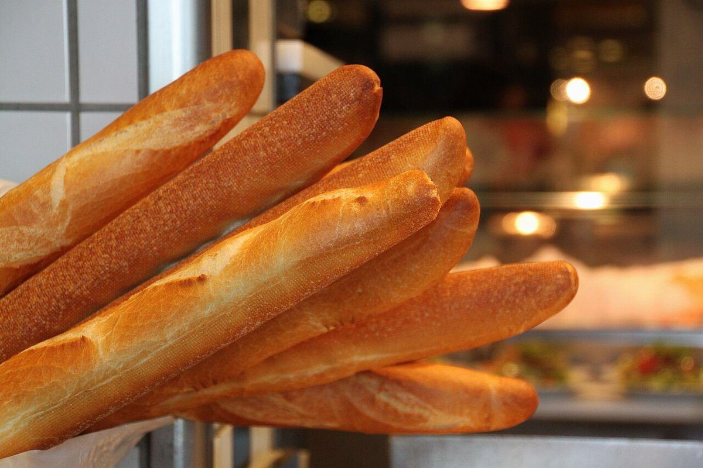
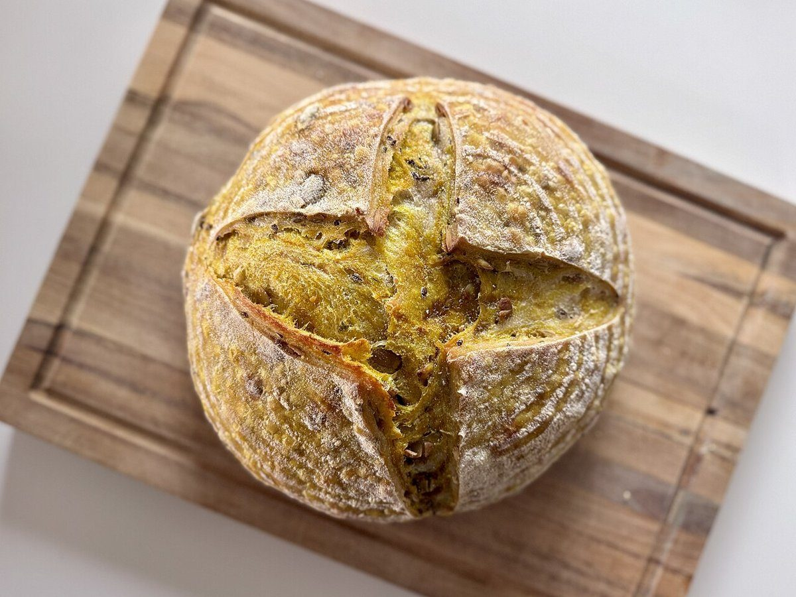
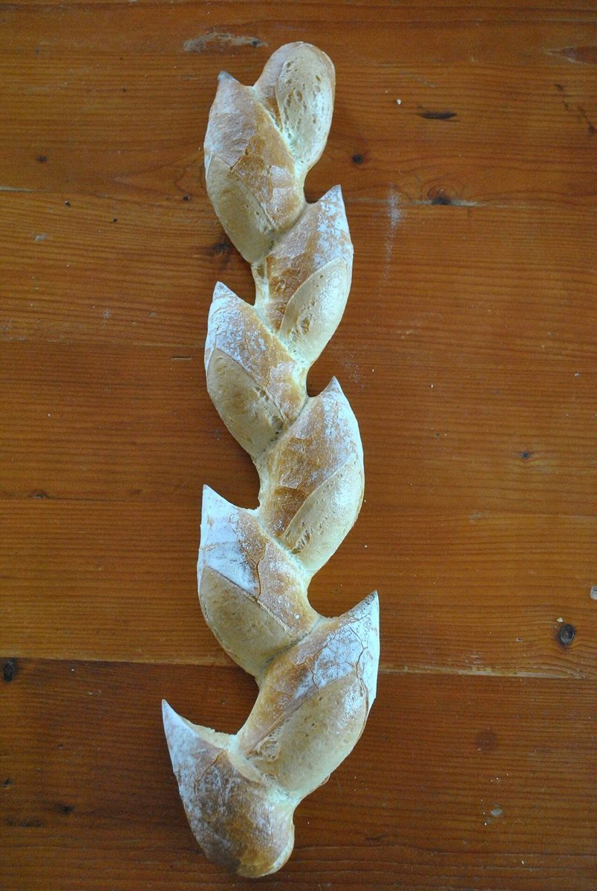

制作側の連想
SDカードの部位を、配置図にしてみる
このサイトは、手のひらサイズのSDカードを図にしたつもりで作りました。六つの部位に番号をふり、上の図と並べています。制作側の連想で、お店の理念・由来とは無関係です。実際の製品の規格や仕様を示すものでもありません。
凡例
六つの部位
- 1端子部カードの縁に並ぶ、金色の接点の列。
- 2書き込み防止スイッチ側面にある、小さくスライドする切り替え。
- 3面取りの角一つの角を斜めに落とした形。向きの目印になる。
- 4ラベル面表面の、文字や印を入れるための面。
- 5外装ケース中身を包む、薄い板状の外側。
- 6端子間の仕切り接点と接点のあいだの、細い溝。
ギャラリー(イメージ)
パンのいろいろな写真




写真はパンやコーヒーのイメージです。お店のものではなく、お店で提供している商品を示すものでもありません。
ご案内
お店のこと(確認できたものだけ)
| 所在地 | 〒918-8112 福井県福井市下馬1丁目102 |
|---|---|
| 電話 | 準備中 |
| 営業時間 | 準備中 |
| 定休日 | 準備中 |
| ご予約 | 準備中 |
| 駐車場 | 準備中 |
| SNS | Instagram @cafe_jura |